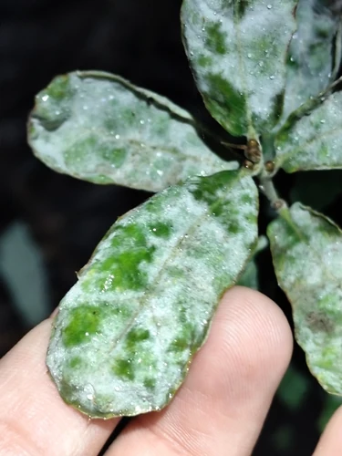

可擦去的白色粉层
先看白色物质的分布：散在的粉状斑、水滴形印迹、均匀蜡层各有不同的排查方向。仅凭是否能擦掉，无法区分这几种情况。

先看哪里
观察粉层是否呈不规则斑块，是否同时覆盖叶、嫩茎或果面。
观察白色区域的边缘。粉状斑可能逐渐向外扩展，水滴干后留下的残迹则可能有清晰环印；决定如何处理前，再检查另一片叶子。
可能原因与下一步
白粉病及表面残留物都有可能。记录是否再次出现，留足通风空间，结合寄主鉴别。
怎样区分相似问题
天然果粉或蜡层往往较均匀；粉状病斑则常呈不规则块，并可能扩大或出现在新组织上。
观察白斑从哪里开始。圆片状斑向原本干净处扩展，应查白粉病。硬水喷雾后留下排列相近的环则可能是水垢。查看喷不到的新叶，避免反复擦伤嫩叶。
现在可以做什么
对照同株健康与受损部位；触碰前先拍下覆盖层，保留健康果实上的天然果粉。
擦拭前查看新斑边界，两次观察之间保留原状，看看它是否在同一片活叶上向外增长。保留清理前的叶面照片，以便分辨新附着物和清理时漏掉的旧痕。
接下来观察什么
若新粉斑扩展到嫩梢或叶片，结合植物种类进一步判断是否需要处理。
观察白色覆盖物从哪儿开始
白色物在活叶上呈不规则岛状扩展，与水滴边缘干涸后留下的硬圈不同。比较从未直接喷到水的内层叶与外层叶；有毛叶要用放大镜，避免把天然绒毛当作霉。